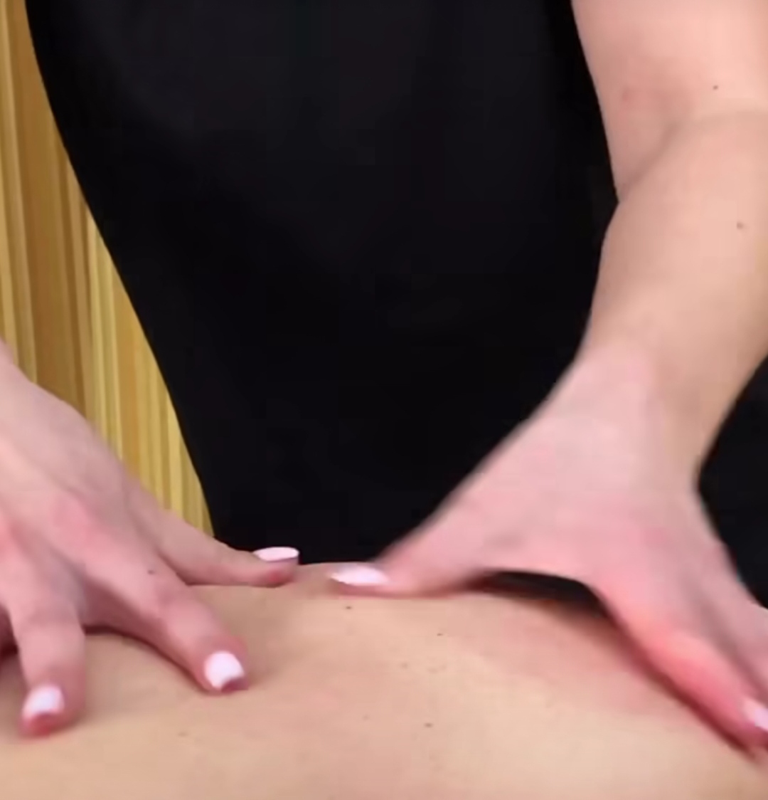
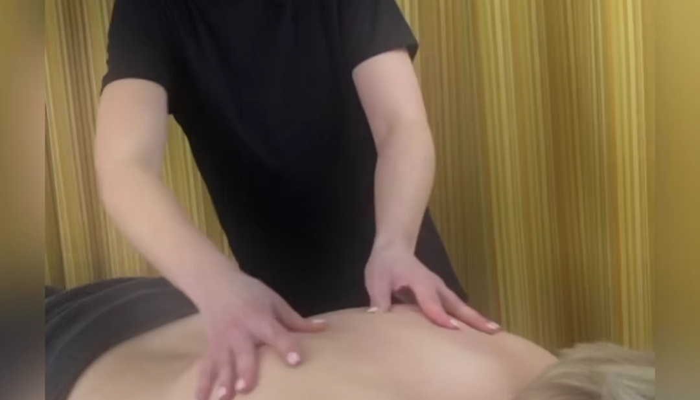
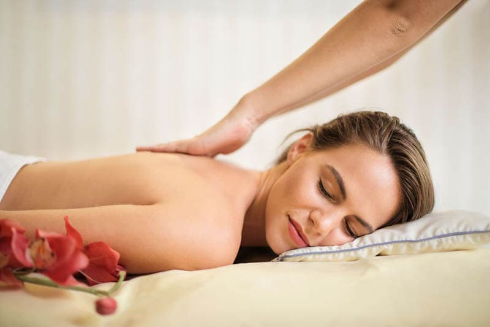

Відпочиньте від повсякденної метушні та отримайте незабутнє розслаблення в нашому кабінеті масажу.
Записуйтесь за телефоном 050 - 521 - 65 - 50. Ми чекаємо на Вас!


Плюси
Мінуси
Загалом, медичний масаж має багато плюсів та може бути дуже корисним для здоров'я та благополуччя. Проте, перед тим, як починати проводити масаж, важливо проконсультуватися по телефону та записатися на масаж який вам пыдходить 
Ось деякі загальні техніки, які використовуються при проведенні медичного масажу:
Це лише кілька загальних технік, які використовуються при проведенні
Для замовлення медичного масажу зателефонуй та запишись
Ось декілька видів медичного масажу та їх ефективність:
Ефективність медичного масажу залежить від багатьох факторів, таких як тип масаж
Кабінет масажу для вас завжди відкритий вам треба лише записатися на медичного масажу
Пропонуємо широкий вибір масажних послуг для всіх вікових груп та проблем здоров'я. З радістю допоможу вам вибрати оптимальний варіант та забронювати зручний час відвідин.
Масажний кабінет займається професійним підходом до кожного клієнта. Використовую тільки найкращі масажні техніки та інструменти, щоб забезпечити максимальний ефект від процедур. Також стежимо за гігієною та безпекою в масажному кабінеті, щоб ви могли насолоджуватися масажем у комфортних умовах.
Масажні послуги доступні за розумними цінами, що дозволяє кожному клієнту відчути користь від процедури та отримати задоволення від відпочинку.Пропоную не лише класичний масаж, а й різноманітні техніки, такі як шведський масаж, тайський масаж та інші, які допоможуть вам відчути глибоку розслабленість і зняти напругу з м'язів.
Дбаємо про комфорт та безпеку наших клієнтів, тому використовуємо тільки найкращі масажні олії та креми, які не містять шкідливих речовин. Маю високу кваліфікацію та досвід роботи з клієнтами різного віку та з різними проблемами здоров'я. Ви можете бути впевнені, що ви отримаєте найкращий сервіс та насолоджуватиметесь кожною миттю масажу в масажному кабінеті.